Notes · September 2026
A remote control for iTunes, in the shape of iTunes.
My music library lives on a 2012 MacBook Pro that runs iTunes 12.9.5 and nothing else. It has no keyboard I want to use and no screen I want to look at. So I gave it an API and wrote a client for the Mac I actually sit at — drawn to look like iTunes 10, because that is the iTunes I want back.
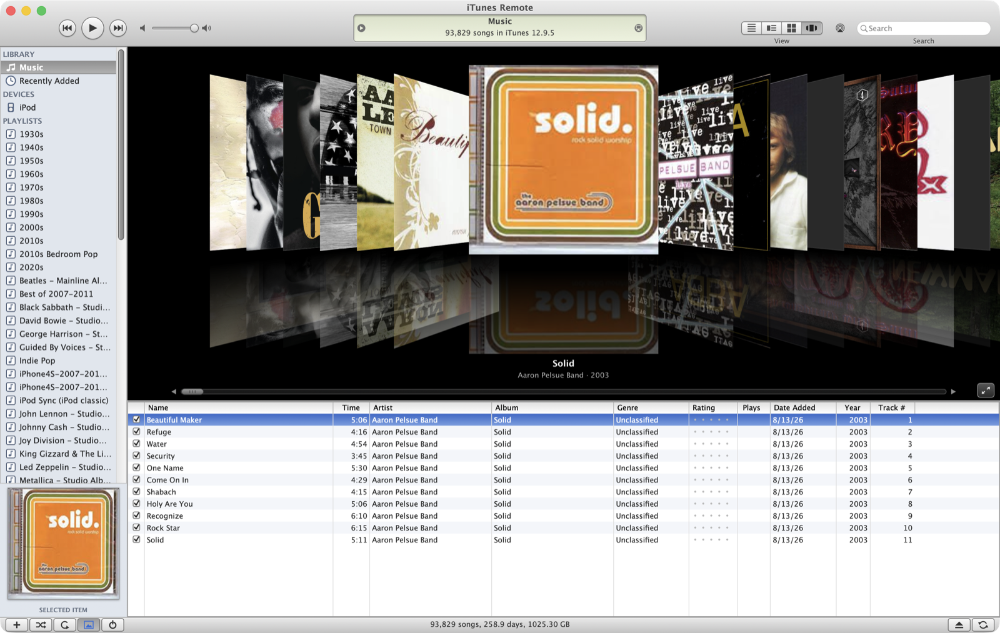
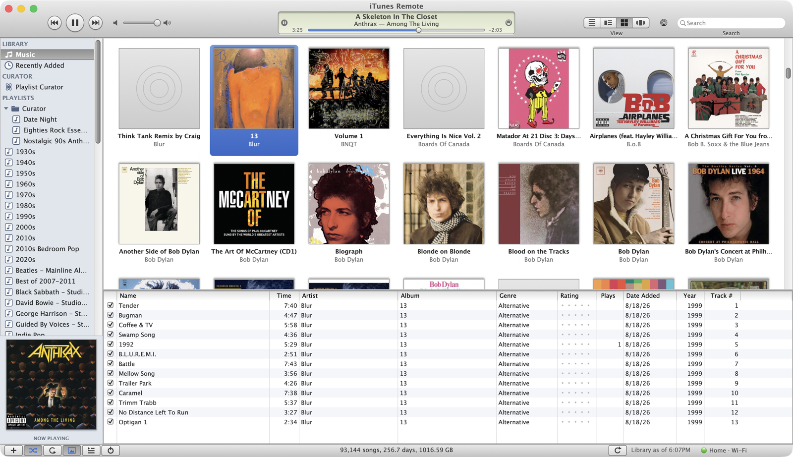
Two halves
The daemon is Python with nothing outside the standard library. It parses the iTunes XML library into memory — a 163 MB file, 100,648 entries, in about a minute — and serves it as JSON over HTTP behind a bearer token. Reads come from that in-memory copy and answer in milliseconds. Writes go through AppleScript to iTunes itself; nothing ever touches the library files on disk.
The client is a native AppKit app, about 9,800 lines of Swift, every control drawn by hand: the pinstripe chrome, the pill buttons, the recessed green display with its scrubber, the column browser, all four view modes, a mini player. There is no interface builder file and no framework.
Every AppleScript call to iTunes takes the same single Apple Events lock. One slow call blocks every other request behind it. Most of this project's performance work was about never needing that lock: keep the library in memory, cache album art on disk, and read embedded artwork straight out of the audio files rather than asking iTunes to export it.
The sync selection problem
The interesting part of this project is the iPod.
iTunes syncs an iPod from a selection — which playlists, artists, albums and genres you have ticked on the device's Music pane. I wanted to change that selection from the other room. It turns out nothing outside iTunes can read it, let alone set it:
- iTunes' AppleScript dictionary has no terms for it.
- The accessibility tree is empty. iTunes 12's window reports zero UI elements, even with
AXEnhancedUserInterfaceforced on. - It lives in the binary
.itldatabase, which is undocumented and not safe to write.
Synthetic clicks on the real checkboxes do work — I proved it, ticked The Beatles and put it back — but a tool that clicks at coordinates breaks the moment anything moves, and can tick the wrong thing. Not worth it.
So the app does not try to mirror iTunes' selection. It keeps its own, and projects it onto a playlist it owns. Playlist membership is fully scriptable and fast: a whole list of tracks crosses in one Apple Event. Point the iPod at that one playlist and it carries exactly what the app says.
Before changing anything I took a read-only inventory of the iPod. The 36 playlists I had ticked accounted for only 7,098 of its 23,273 distinct tracks. The other 16,175 — about 70% of the device — came from individually ticked artists, which iTunes does not expose. Switching to "sync one playlist" without checking would have silently wiped most of my iPod. Instead the playlists stay ticked and the app's playlist carries the rest.
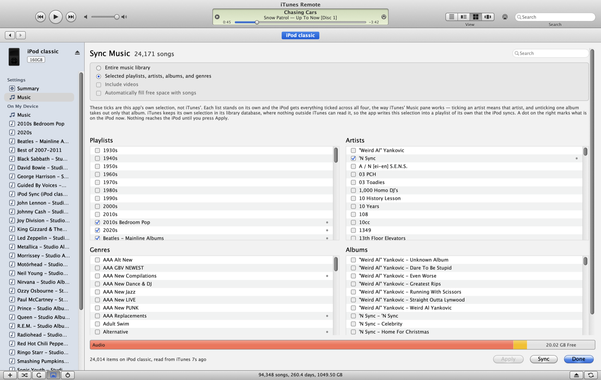
Counting is harder than it looks
Three parts of this setup report the size of the same iPod and all three disagree. None of them is wrong.
| Number | Where | What it counts |
|---|---|---|
| 24,153 | This app's status line | Songs actually on the iPod, read back after the sync |
| 24,184 | iTunes' own heading | What iTunes expects to sync, folding identical files into one |
| 24,310 | This app's heading | Library entries the selection covers, counting each separately |
The first gap is duplicate copies — re-downloaded purchases that are byte-identical. The second is the handful iTunes counts but never actually writes: two files it silently refuses, and duplicates it drops during the sync itself.
Matching iTunes exactly
A surprising amount of the work was making lists come out in iTunes' order, because "close" is instantly visible when you have both windows open side by side.
The column browser was the worst of it. My artist count was 4,470 against iTunes' 2,909. iTunes files compilations under a single Compilations row, groups by the hidden Sort Artist field, and folds accents and punctuation together. Then a subtler bug: rows were grouped by Sort Artist but labelled with the display name, so "The Beatles" was keyed as "beatles" — 265 of 2,905 rows selected nothing at all when clicked. Now a click matches either form.
Sorting has its own rules. Leading articles drop, so The Beatles files under B. Quotation marks are ignored wherever they fall, so "Weird Al" Yankovic is under W and 'N Sync under N. Other punctuation is skipped: (Sandy) Alex G under S, R.E.M. as "rem". Accents fold. Anything starting with a digit goes after Z.
The whole app looked slightly soft next to real iTunes 10, and no amount of adjusting my drawing fixed it. It isn't the drawing. macOS removed subpixel antialiasing in Mojave, in 2018. Text on a modern Mac is greyscale-antialiased and genuinely blurrier than the same text was in 2010. Nothing in an app can bring it back.
Watching a sync from the other room
iTunes 10 stacked a small pair of arrows on its display when it had more than one thing to show, and clicking them cycled between the song and whatever job was running. I wanted that back, because writing a sync playlist of 24,000 tracks takes minutes and a frozen-looking window is no fun.
The daemon now tracks what it is writing and serves it. A playlist rebuild knows its own size, so the bar is determinate. An actual iPod sync does not — iTunes reports no progress whatsoever — so a watcher thread reads the song count off the device every few seconds and the bar is a barber pole until the count stops moving.
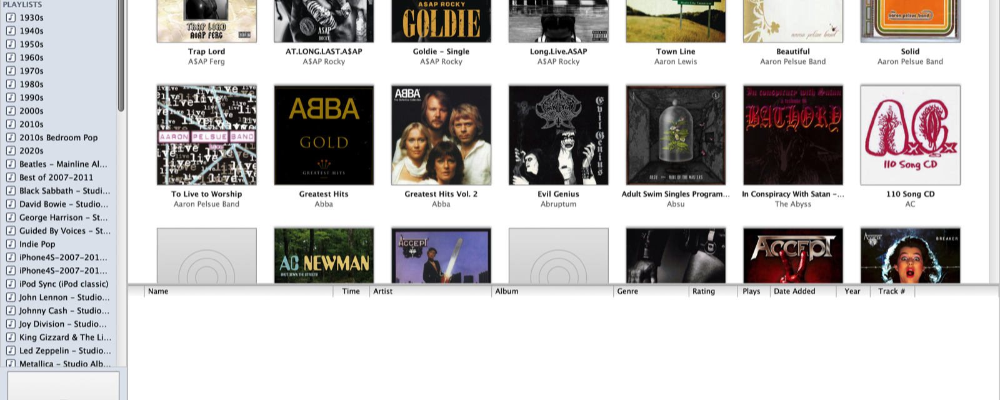
Things it turned out to need
A headless machine raises modal dialogs at nobody. iTunes will happily sit behind a sync warning forever, blocking every AppleScript call, with no one in front of it. The daemon reads whatever dialog is open and the client can dismiss it remotely — that alone explained a class of mysterious hangs.
iTunes 12.9.5 also cannot AirPlay to a modern Mac at all; it fails with error −15022. So "Play on This Mac" skips AirPlay entirely: the daemon streams the file over HTTP with range support and the client decodes it locally.
And ejecting an iPod fails with "in use by another application" if anything still has a file open on the volume — including the app's own background polling. An eject now tells every reader to stand off first.
A curator that only knows your library
The newest section in the sidebar is a small language model running on the laptop itself, through Ollama — nothing leaves the house. You ask it for a playlist in plain words ("a 20 song playlist for a 90s road trip", "something like Bill Evans for a rainy Sunday") and it builds one from the 93,000 songs on the other machine. Then you argue with it: "less jazz standards, add a couple of slow indie rock songs, keep it to 20", and it edits the list rather than starting over.
The trick is that the model never sees the library and is never allowed to name a song. It writes a short plan — a mood, a dozen search phrases, some artists it expects to fit — and the app turns that into about 140 real songs, half by meaning through an embedding index of every track and half by matching the artists it named. The model then picks by number from that list. It cannot recommend a song you do not own, because the only songs it can point at are the ones in front of it.
The rules it is told and forgets — two per artist, no Christmas songs in July, the count you asked for, the decade you asked for — are enforced by the app afterwards, and the list is topped up from the candidates it passed over so twenty asked for is twenty given. Feedback comes back as an explicit edit (remove these, add these, this order) rather than a fresh list, because asked for a fresh list a 4-billion-parameter model rewrites everything, and asked what to remove it once named fifteen of twenty for "less jazz". Saved playlists go into a Curator folder in iTunes so they never mix with the hand-made ones. A turn takes about half a minute on an M5 MacBook Air, and the bottom of the page says which model is doing the picking.
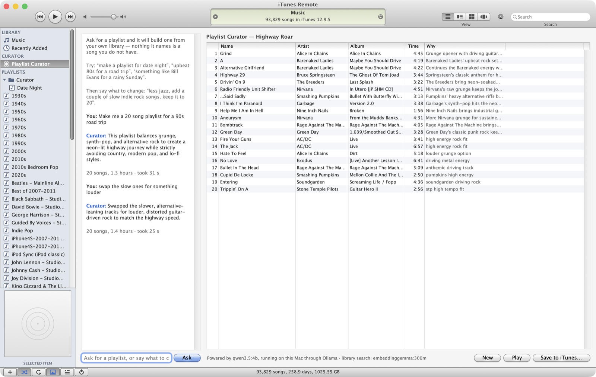
A curator that learns from being corrected
A stock model does not know that you skip live albums, or that "90s" to you means the songs and not the remasters. Three things were added so it finds out, none of which sends a byte off the Mac. The first is memory: every song you delete from a curated list, every piece of feedback, every list you save is kept per request, and a new request that resembles an old one — matched by meaning, so "songs from the nineties" reaches a lesson about "90s anthems" — never offers the songs you took out last time and tells the model what you said. The second is taste: play counts and star ratings become a quiet per-artist and per-genre profile that nudges the search toward what you actually play, marks those artists for the model, and keeps one-star songs out entirely.
The third is real training. Saving a playlist also files away the turns that led to it — the exact prompt the model saw and the answer you ended up approving — and Controls ▸ Train Curator on My Edits… turns those into a picker of your own. It fine-tunes a base model on the laptop with Apple's MLX, fuses the result, hands it to Ollama, and switches the curator over, with a progress bar, a Stop button, and one plain question first about what will be downloaded. It wants a few hundred saved playlists before it is worth the several hours a run takes, and under that it says so and offers to run anyway. A button puts the stock picker back.
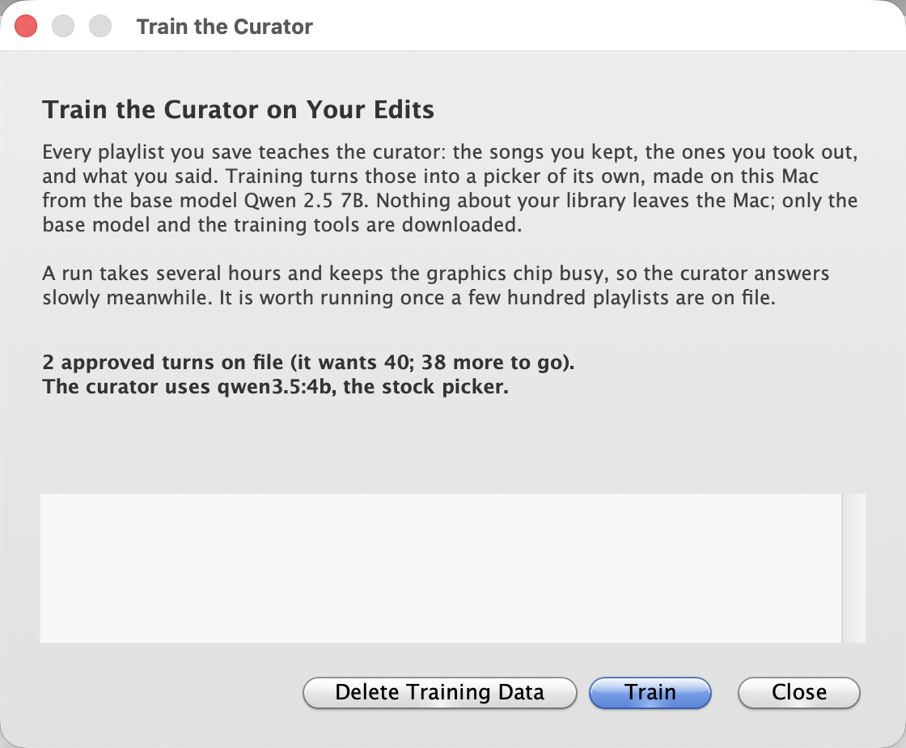
Seven more things
With the big pieces in place I asked what else the app ought to do, got a list of seven, and said yes to all of them, with one condition: the curator page had to stay exactly as it was. They all landed in one evening.
Duplicates. A row under Library, like the old Show Duplicates: songs with the same title and artist within two seconds of the same length, grouped, the copy worth keeping first (best bit rate, then rated, then most played) and the rest in grey. The status line says how many groups and how much space the extras take. On my library: 6,448 songs with more than one copy, 8,297 extras, 77 GB.
Missing artwork. File ▸ Find Missing Artwork… lists every album with no cover, 858 of them here, and looks each one up in the iTunes Store's catalogue. Find Cover shows the matches and lets you page through them; Find All walks the list and takes a cover only when the artist and album names agree exactly, then writes it to every song of the album through iTunes. It is the one feature that talks to anything but the other Mac, so the window says what is sent: the artist and album names, nothing else.
More Like This. Right-click a song, or a whole album's worth of songs, or a playlist in the sidebar, and the curator starts from those instead of from a sentence. Their embeddings pull the search toward them, their artists join the plan, and the seed songs themselves stay off the list. The page and the conversation are unchanged; you can still say what to change afterwards.
Lyrics and Last Played. Get Info on a single song has an Info | Lyrics switch; lyrics are not in the library file iTunes shares, so the app reads them from iTunes when the sheet opens and writes them back if you edit them. A Last Played column joins Plays and Date Added. Up Next survives a relaunch. When the window is out of sight, a notification with the cover announces each new song. And two bits of housekeeping: the daemon's token moved from the preferences file into the keychain, and every message that used to say "the MacBook Pro" now uses the paired Mac's own name.
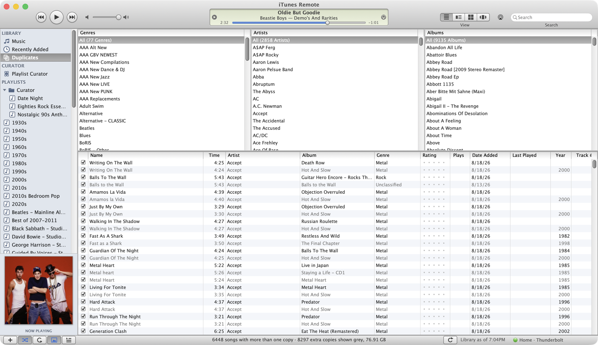
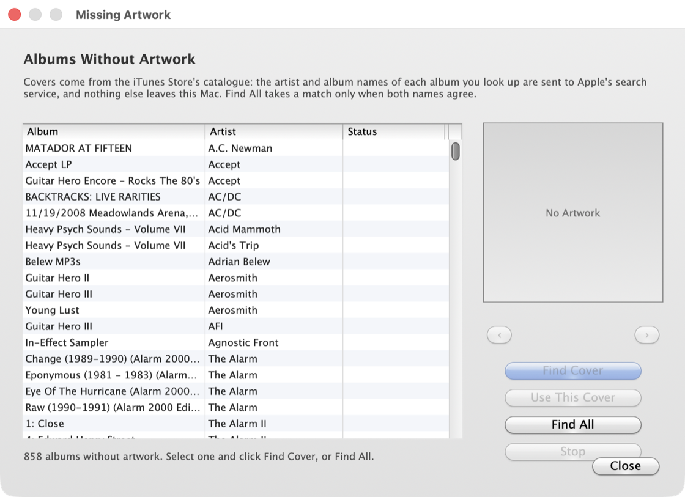
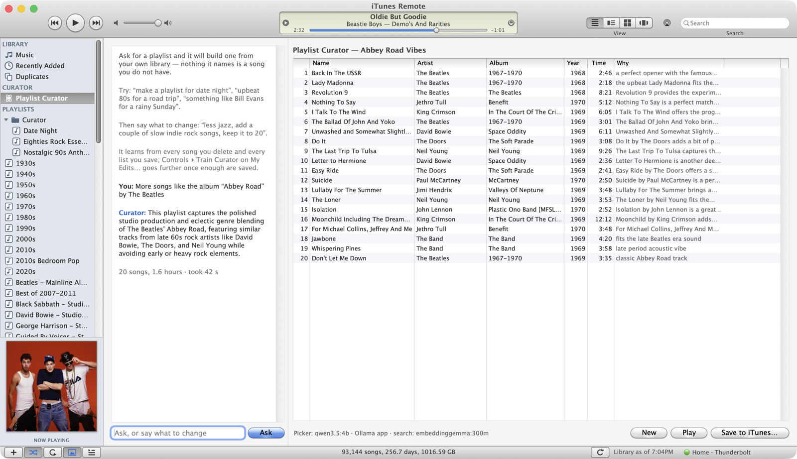
The iPod that would not mount
Some days the iPod would go in and nothing would happen: no disk, no device in iTunes, nothing for the app to sync. The first time it happened, restarting iTunes on the Pro seemed to cure it, and that became the theory — iTunes 12.9.5's device handling wedges after an eject that times out. I asked for a button that finds the iPod and mounts it, and got one: Find iPod, in the Controls menu and on the page of a device iTunes has not opened. It asks the Pro to look at the USB bus afresh and at what iTunes has open, and reports one of three states — not plugged in, open in iTunes, or plugged in with iTunes ignoring it — and for the third offers the restart and waits a minute for the iPod to appear.
Then it was tested against the real thing, with the iPod actually plugged in and ignored, and the restart did nothing. The driver stack was attached all the way down to the block storage driver with no disk under it, and asking the drivers to look again returned "unsupported". What broke the case open was the iPod's own screen: Connected, then Ejecting, then OK to disconnect. Something on the Pro was ejecting it nine seconds after it arrived. The unified log named it: loginwindow, calling DADiskEject from its mount-approval callback. The Pro's screen was locked, and macOS will not mount a disk plugged in while the screen is locked; it ejects it instead. The iTunes restart had only ever "worked" on a day the screen happened to be unlocked, and a note in my own records calling the lock a red herring was wrong.
Two fixes. Find iPod now checks the lock first and says so in words, with no restart on offer. And the Pro carries a one-line setting Apple documents for headless Macs — AutomountDisksWithoutUserLogin in /Library/Preferences/SystemConfiguration/autodiskmount — which turned out to cover the lock screen as well as the login window: with the screen locked, the iPod now mounts, iTunes opens it, and the log shows no eject. The lesson is an old one. The button I asked for was a good button, but the bug was not where the button was pointing, and the thing that found it was reading what the device said on its own screen.
Two libraries, never mixed
There is also an Apple Music library on the Mac I sit at, and I wanted the same app for it without the two ever touching. File ▸ Library switches between iTunes on the Pro and Apple Music here. Each side has its own connection and token, its own Up Next, its own curator index and lessons, and switching quits and reopens the app, which is the simplest honest way to guarantee that nothing from one library is still in memory when the other loads. The Apple Music side needs nothing installed: the app carries the same daemon plus a small tool that reads Music's library through Apple's iTunesLibrary framework into the shape the daemon already understands, and sets it up as a background service the first time.
I asked whether it would be better to sign in with an Apple ID and use Apple's Music API instead. It would not. The API can list a library and make playlists, but it cannot play anything in a Mac app, cannot edit tags, lyrics or artwork, has no play counts or ratings, and cannot see songs that live only as files. The one thing it adds is the catalogue of songs you do not own, which is a different product. Reading the library on the Mac gives everything the iTunes side has, minus the iPod, because Music syncs devices through the Finder and exposes none of it.
The one place the Apple ID does earn its keep is the catalogue, so on the Apple Music side the search field's drop-down searches Apple Music itself rather than the library: songs and albums you do not have, with a menu under each to play it, add it to the library, drop it into one of your playlists, or start a new playlist with it. The list underneath keeps filtering the library you do have. Apple's own framework has no "add to library" on the Mac, so those adds are the same requests Apple's web API takes, signed by the framework's token. And since a library you can add to should be one you can prune, both sides gained Delete from Library, with the confirmation iTunes would have shown. Music itself does not have to be open for any of the reading; when the app needs it for playback or an edit, it is launched hidden in the background.
Shazam came along for the ride. Controls ▸ Identify What's Playing listens to the microphone for twelve seconds and names the song, with the same offers underneath: find it in the library, or on the Apple Music side add it or play it. Nothing is recorded; only a signature of the sound leaves the Mac. Both of these needed one thing I could not do from the keyboard: the app's identifier had to have the MusicKit and ShazamKit services switched on in the developer account. The first search after that still failed, and the second worked, which is Apple's side catching up rather than anything in the code.
Two looks
The whole point of this app was the iTunes 10 look, and it stays. But every surface in it is drawn by hand — gradients, gel buttons, the green LCD, the striped lists — and that turned out to make a second look cheap: give every control one more branch, and a theme they all ask at draw time. View ▸ Appearance now offers Classic iTunes 10 or Modern Glass. The modern one uses the system font, flat translucent bars with the desktop blurred behind them, the transport buttons and the display sitting on macOS 26's glass, rounded pill selections in the accent colour, and the system's overlay scrollers. Nothing was replaced with a stock control; the same views draw differently. The choice is read once at launch, so switching relaunches the app, the same trick the library switch uses. It is light-only for now: the app's own labels carry fixed greys that a dark window would swallow.
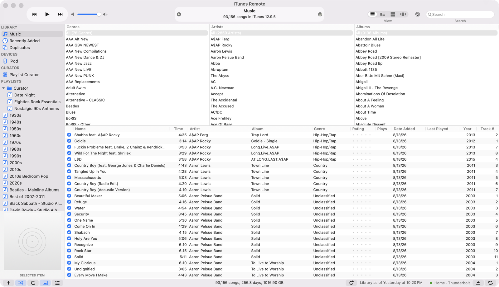
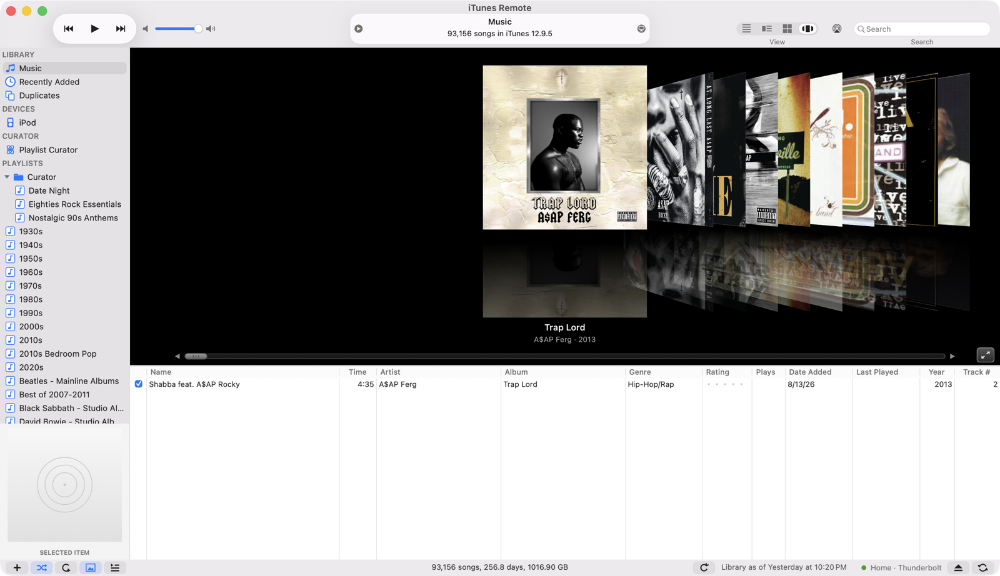
Built with Claude Code
This was written with Claude Code, and the shape of the work is what I'd expect from a good collaborator: the hard parts were not writing Swift, they were finding out what iTunes actually does. Counting artists three different wrong ways before deriving the rule from the real window. Taking an inventory before a destructive change and finding out the change would have destroyed 70% of my iPod. Proving screen-clicking worked and then agreeing not to use it.
It took about 19 hours of wall clock across two days — first commit at 10:27 pm on 2 September 2026, most recent at 5:36 pm on the 3rd — over 48 commits and 1,254 tool calls. Four models did the work:
| Model | Responses | Output tokens | Total tokens |
|---|---|---|---|
| Opus 5 | 739 | 807,303 | 299,079,596 |
| Fable 5.1 | 195 | 546,420 | 76,664,523 |
| Opus 4.8 | 78 | 100,132 | 42,386,678 |
| Opus 4.7 | 57 | 45,538 | 6,979,186 |
| Total | 1,079 | 1,499,393 | 425,109,983 |
425 million tokens to produce 13,781 lines that survived. Almost all of that is cached context re-read on every turn — the actual writing is the 1.5 million output tokens. The other 280× is reading, running things on the old machine, and being wrong in public until the rule fell out.
There's a technical write-up of how it works — the Apple Events lock, the 163 MB XML library and its write journal, the unreadable sync selection, and iTunes' real sort rules. The source is on GitHub in a private repository.